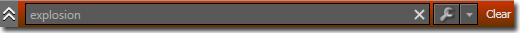

UDN
Search public documentation:
ContentBrowserReference
日本語訳
中国翻译
한국어
Interested in the Unreal Engine?
Visit the Unreal Technology site.
Looking for jobs and company info?
Check out the Epic games site.
Questions about support via UDN?
Contact the UDN Staff
中国翻译
한국어
Interested in the Unreal Engine?
Visit the Unreal Technology site.
Looking for jobs and company info?
Check out the Epic games site.
Questions about support via UDN?
Contact the UDN Staff
UE3 Home > Unreal Editor and Tools > Content Browser Reference
Content Browser Reference
Overview
- Browse and interact with all assets found in the game: loaded and unloaded.
- Find loaded and unloaded assets:
- Text Filter: type to find assets by Name, Path, Tags or Type. You can exclude assets from your search by prefixing a search token with a '-'.
- Extended Filter: Browse assets by Object Type and/or combinations of tags.
- Add frequently-used Object Types to favorites.
- Organize loaded and unloaded assets without ever needing to check out packages:
- Create tags.
- Apply tags to assets.
- Create private Collections and store assets in them for future use.
- Create Shared Collections to share interesting assets with your coworkers.
- Development assistance:
- Show assets which may contain problems.
Concepts
- Tag: A tag is a string that you can "put on an asset". An asset can have any number of tags applied to it. Tags make it easier to find assets within the game. There is no restriction on which tags are created, giving the user control over how assets are organized.
- My Collections: A Collection is a place to put your assets. While the data for each asset resides in a package file, an asset can reside in any number of collections. "My Collections" are private; that is, they are visible only to you only.
- Shared Collections: Shared Collections differ from private Collections in that they are visible to everyone on your team.
Sources
Packages View
A typical project will involve many packages. The Packages View provides a few tools that help you keep track of the packages you are currently working with. In addition to the text filter you can show packages that have been modified and packages that are currently checked out:Context Menu Reference
- Bulk Import: Imports all of the files in a specified directory path by recursing through the directory structure inside the path. The tool automatically creates packages and groups and places files in the correct package based on how the directory structure is layed out. See the BulkImport page for instructions on performing a Bulk Import.
Filter Panel
View Controls
| Details List View | |
| Details and Thumbnails: Horizontal Split | |
| Details and Thumbnails: Vertical Split | |
| Thumbnails View |
| Drag left/right to change the zoom level | |
| Change the thumbnail size |
| Change the sorting of assets |
Tags Panel
- In MyGameEditorUserSettings.ini, add a section for [ContentBrowserSecurity]
- Under this section, set bIsUserTagAdmin=True
- This isn't really supposed to be a security system -- it just helps to prevent people from accidentally destroying data.
Tag Groups
Asset Age Tracking
Collection Copy and Rename
Excluding from Search
Sorting Thumbnails
Multiple Content Browser Windows
Filter Panel
TextFilter
The text filter can be used to accomplish most filtering tasks. You can search simply by typing in a term of interest. For example, to find explosions simply type the word "explosion".  You can further refine the search by adding more search terms. Terms can be excluded from the search by prefixing them with a '-'. For example "explosion dust -electric" will show only assets which have the words 'explosion' and 'dust' but do not have the word 'electric' somewhere in the package or group name, in the tags, in the type or in the name of the asset itself. This behavior can be controlled by clicking the to expand it, and toggling one or more of the options. The options are:| Name | Whether to search for terms in the name of an asset. e.g. The term "expl" would be found in an asset named "M_FX_ExplosionFramed_Alpha" | |
| Path | Whether to search for terms in the package or group names in which this asset resides. Note that enabling this option will return many results. e.g. The the asset "FX_VehicleExplosions.Materials.M_FX_ExplosionFramed_Alpha" would match many terms including "vehi", "expl", "mat", "alpha", and many others. | |
| Tags | Whether to search in the tags applied to an asset. e.g. An asset tagged as "Explosion" would match the terms "Explosion" as well as partial terms such as "expl". | |
| Type | Whether to search in an asset's type. e.g. Any particle system would match the term "ParticleSystem". |
| Match All | Show assets that contained every one of the specified terms in any of the selected fields (name, path, tags or type). | |
| Match Any | Show assets that contained one or more terms in any of the selected fields. |
Extended Filter
The extended filter panel can further filter down the visible assets without any need for typing. The filters are applied from left to right, so altering filter settings on the left will affect the options available further to the right. On the far left the status filter controls whether loaded, unloaded, tagged, and untagged assets are shown. For example, to see only assets that are currently loaded select the 'Loaded' item: Now suppose you are looking to add some environment meshes to a level. You begin with an empty filter. Select the 'Static Mesh' option from the Object Type column to see only Static Meshes. Notice that the number next to each tag has updated to reflect how many assets tagged with that tag remain. For instance, the number of assets tagged with Character filtered down from 10 to 1 and Destroyed filtered down from 7 to 6. Select the 'Deco' and 'Scenery' tags to see only 'Deco' and 'Scenery' meshes. Notice that the next tag column has become activated and displays a further refined set of tags with updated asset counts. Now select 'Building' and 'Foliage' to see meshes that are Building or Foliage. The final list of tags has become activated.Potential Problems Filtering
Quarantined Assets
This tag includes all assets that have been quarantined by developers.Static Meshes with Bad UV Sets
This tag includes static meshes that have overlapping UV coordinates. This is helpful in finding meshes that are causing problems when trying to perform light mapping. However, this may be intended as some meshes may want to share the same texture space in order to save memory. Opening a static mesh reveals that one of the UV sets has overlapping coordinates.Static Meshes with Lightmap Resolution at 0
This tag includes static meshes that have their default light map resolution set at zero. This is helpful in finding meshes that are causing problems when trying to perform light mapping. Opening a static mesh reveals that its LightMapResolution is set to zero.Static Meshes with Missing UV Sets
This tag includes static meshes that do not have a second set of unique UV coordinates used for light mapping. This however may be intentional by the content creator as the first set of UV coordinates may already be unique for light mapping purposes. Opening a static mesh reveals that it only has one set of UV coordinates.Quarantine Mode
 The Content Browser is now in Quarantine mode.
To quarantine an asset, right click on it to bring up the content menu. Left click on Toggle Quarantined to quarantine it or not. You can also use Ctrl+Q as a keyboard short cut to perform this action.
The asset is now quarantined.
Switching the Content Browser back to normal, now hides the quarantined asset.
After you have quarantined assets, you can then use the delete quarantine commandlet to automatically and safely delete these assets. Please read DeleteQuarantinedContentCommandlet for more information on this commandlet.
The Content Browser is now in Quarantine mode.
To quarantine an asset, right click on it to bring up the content menu. Left click on Toggle Quarantined to quarantine it or not. You can also use Ctrl+Q as a keyboard short cut to perform this action.
The asset is now quarantined.
Switching the Content Browser back to normal, now hides the quarantined asset.
After you have quarantined assets, you can then use the delete quarantine commandlet to automatically and safely delete these assets. Please read DeleteQuarantinedContentCommandlet for more information on this commandlet.
Quick Reference
| Action / Hotkey | Effect |
|---|---|
| Ctrl+Shift+F | Focus the text search textbox (from anywhere in UnrealEd). |
| RMB + Drag | Pan around the Thumbnail view |
| Space | Preview selected asset (currently only applies to sounds) |
| Ctrl+A | Select all assets |
| Ctrl+Shift+A | Set the source to AllAssets |
| Shift+Click on arrow in TreeView | Expand/Collapse recursively |
| B (Hold) | Enlarges the color-coded border around asset thumbnails while button is held down |